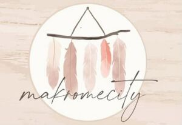

Trade Mark Journal No.2025/052 26 December 2025
WO0000001891103 (35)
Office of origin: Turkey
Date of International Registration:14 October 2025
Date of designation in the UK:
14 October 2025

The mark contains the colours dark brown, dusty rose, light pink, beige, coral pink and cream.
- Class 35
- Advertising, marketing and public relations; organization of exhibitions and trade fairs for commercial or advertising purposes; development of advertising concepts; provision of an online marketplace for buyers and sellers of goods and services; the bringing together, for the benefit of others, of a variety of goods, namely, mattresses, pillows, air mattresses and cushions, not for medical purposes, water beds, mirrors, ornaments and decorative goods of wood, cork, reed, cane, wicker, horn, bone, ivory, whalebone, shell, amber, mother-of-pearl, meerschaum, beeswax, plastic or plaster namely figurines, holiday ornaments for walls, sculptures, trophies, decorative baskets of woven wood, decorative baskets of textile, fishing baskets, kennels, nesting boxes and beds for household pets, bamboo curtains, roller indoor blinds [for interiors], slatted indoor blinds, strip curtains, bead curtains for decoration, curtain hooks, curtain rings, curtain tie-backs, curtain rods, ornaments and decorative goods of glass, porcelain, earthenware or clay namely statues, figurines, vases and trophies, ropes, strings, rope ladders, hammocks, fishing nets, yarns and threads for textile use, threads and yarns for sewing, embroidery and knitting, thread, elastic yarns and threads for textile use, tents, awnings, tarpaulins, sails, vehicle covers, not fitted, textile goods for household use: curtains, bed covers, sheets (textile), pillowcases, blankets, quilts, towels, laces and embroidery, guipures, festoons, ribbons (haberdashery), ribbons and braid, fastening tapes for clothing, cords for clothing, letters and numerals for marking linen, embroidered emblems, badges for wear, not of precious metal, shoulder pads for clothing, carpets, rugs, floor mats, enabling customers to conveniently view and purchase those goods, such services may be provided by retail stores, wholesale outlets, by means of electronic media or through mail order catalogues.
MAKROMECİTY TEKSTİL SANAYİ VE TİCARET LİMİTED ŞİRKETİ
Representative: YEDİ KITA PATENT LİMİTED ŞİRKETİ, ORUÇ REİS MAHALLESİ TEKSTİLKENT CAD.,, NO:12 B KOZA PLAZA A BLOK K:1 OFİS:34,, ESENLER, İSTANBUL, TURKEY